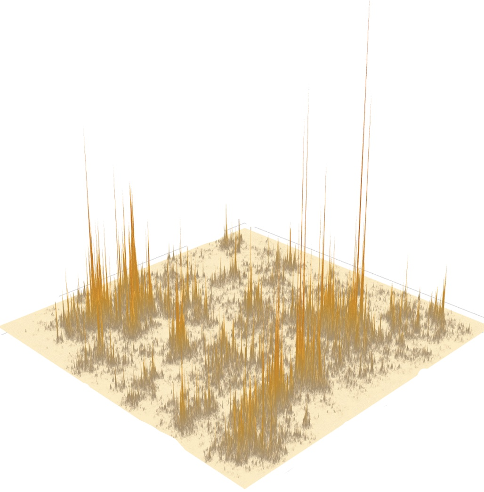
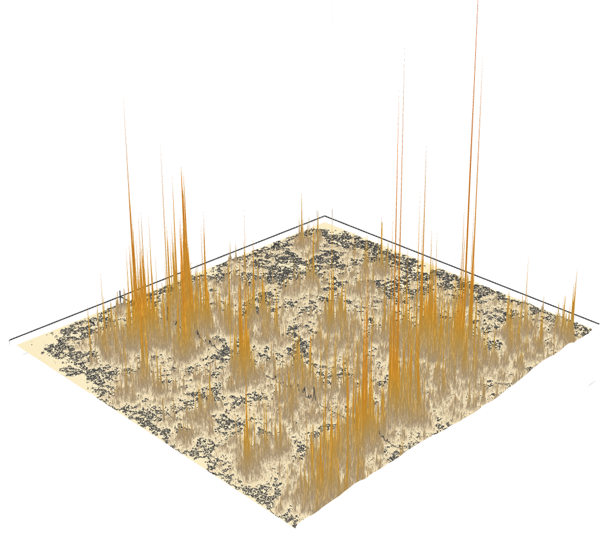

The critical two-dimensional stochastic heat flow is a process of random measures obtained as the scaling limit of directed polymer partition functions in the critical window. Many questions about the flow remain open, and this project aims to deepen our understanding of it.
Scope
This site and the accompanying repository provide a place to develop and share our understanding of these results. We aim to bring together expositions and formalisations, and to explore further directions as a community.
Contributors
- Simon Gabriel (UC Berkeley)
- Nikos Zygouras (University of Warwick)

